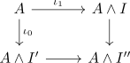
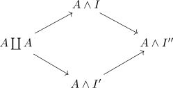
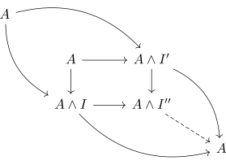
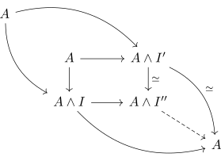

pushout of cylinder objects of a cofibrant object as cylinder object
Proposition
Let $(\mathcal{C}, \mathcal{W}, \mathrm{Cof}, \mathrm{Fib})$ be a model category, $A \in \mathrm{Ob}(\mathcal{C})$ a cofibrant objectobject.
Then given a pushout

where $A \wedge I, A \wedge I'$ are good cylinder objects, it follows that $A \wedge I''$ is also a cylinder object with respect to

Proof
consider

cylinder object
then $A \rightarrow A \wedge I$ is a trivial cofibration inclusion into a good cylinder object for a cofibrant object as trivial cofibration and hence also $A \wedge I' \rightarrow A \wedge I''$ (cf. trivial cofibrations as saturated set)

thus the dashed arrow is aslo a weak equivalence